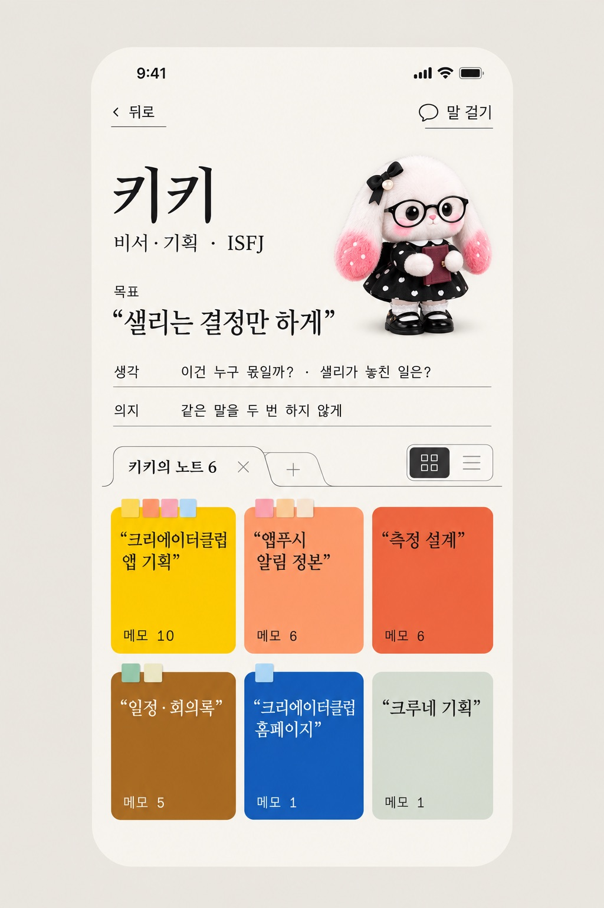
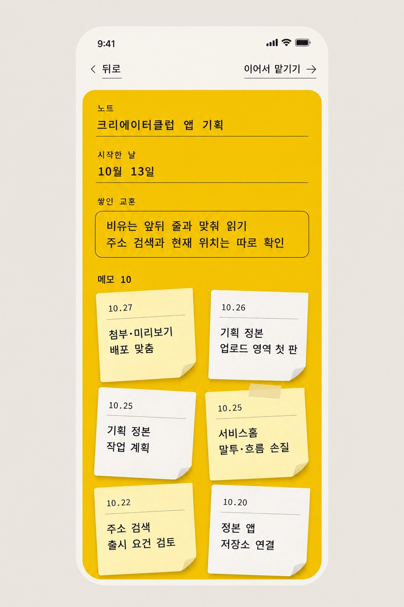
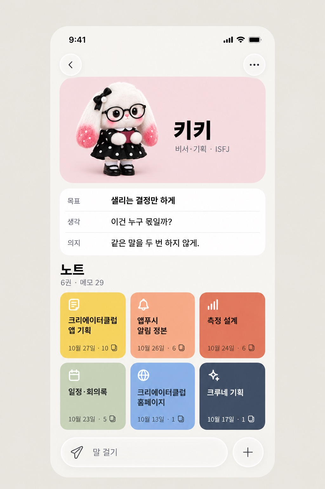
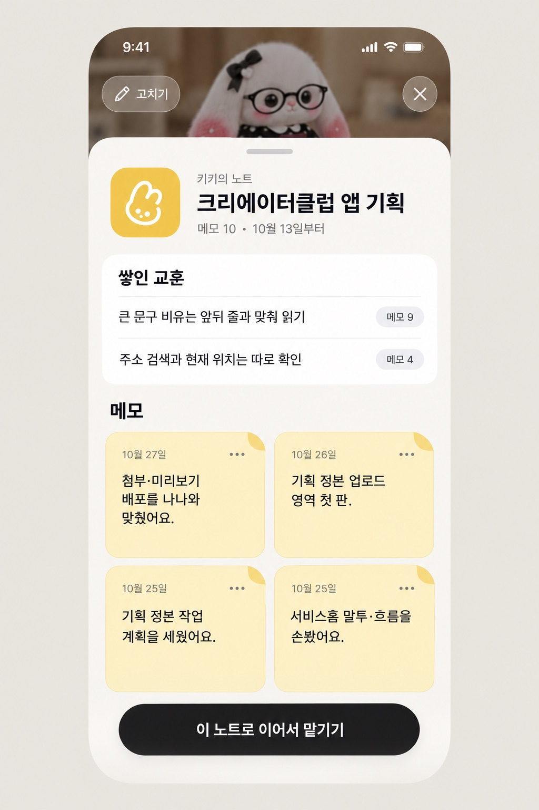

크루 노트 · 포스트잇 메모
일할 때마다 정사각형 포스트잇 메모가 한 장씩 붙고, 같은 일의 메모가 모여 노트가 돼요.
이 화면이 하는 일 — 업무 현황판(보고 탭)이 아니라 크루의 정체성과 기억을 보는 자리예요.
① 이 크루가 무엇을 향하는지 보고 고친다 · ② 무엇을 쌓아 왔는지 노트로 본다 · ③ 노트 하나를 골라 그 일을 이어 맡긴다.
그래서 위에서부터 누구·목표 → 노트 → 행동 순서로 놓았어요.
P1 레퍼런스 그대로
핀의 라이브러리 화면처럼 미색 종이 위에 진한 색 카드, 명조 제목, 타자기 글씨를 썼어요. 노트를 열면 그 색이 화면을 채우고, 메모는 살짝 기울어진 포스트잇이에요. 크루네 규격(차분한 색)과는 달라서 비교용이에요.


P2 애플 최신 가이드판 · 추천
같은 생각을 크루네 규격과 최신 애플 가이드로 다듬었어요. 유리는 떠 있는 단추에만, 카드는 불투명. 노트 색은 한 톤 낮추고 선 아이콘을 붙였어요. 노트 카드에는 마지막으로 메모가 붙은 날과 메모 수를 둬요.

